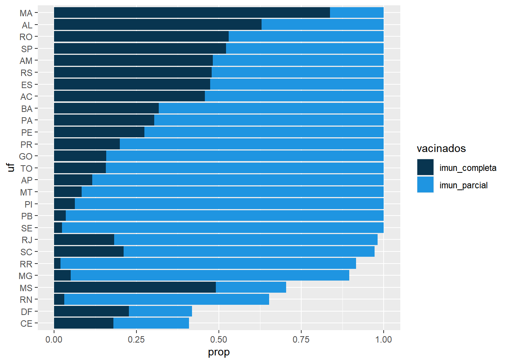
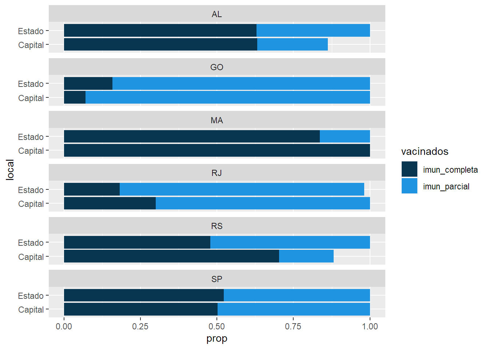
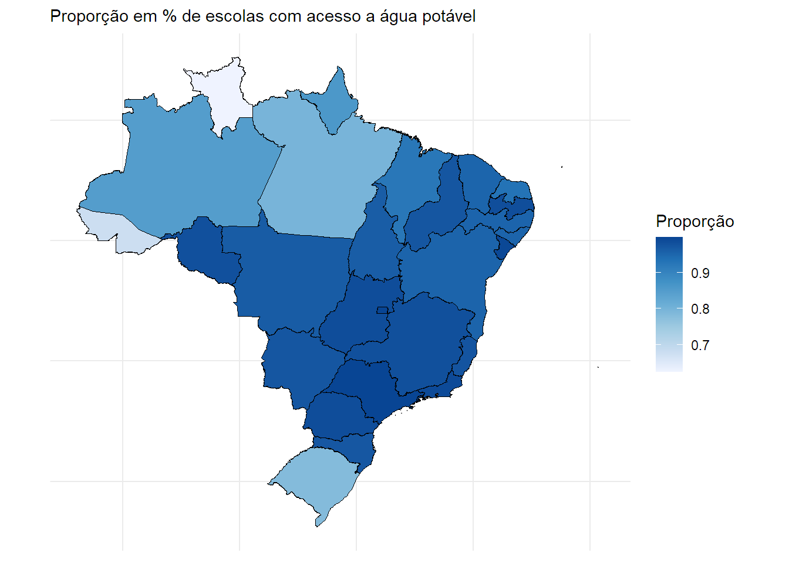
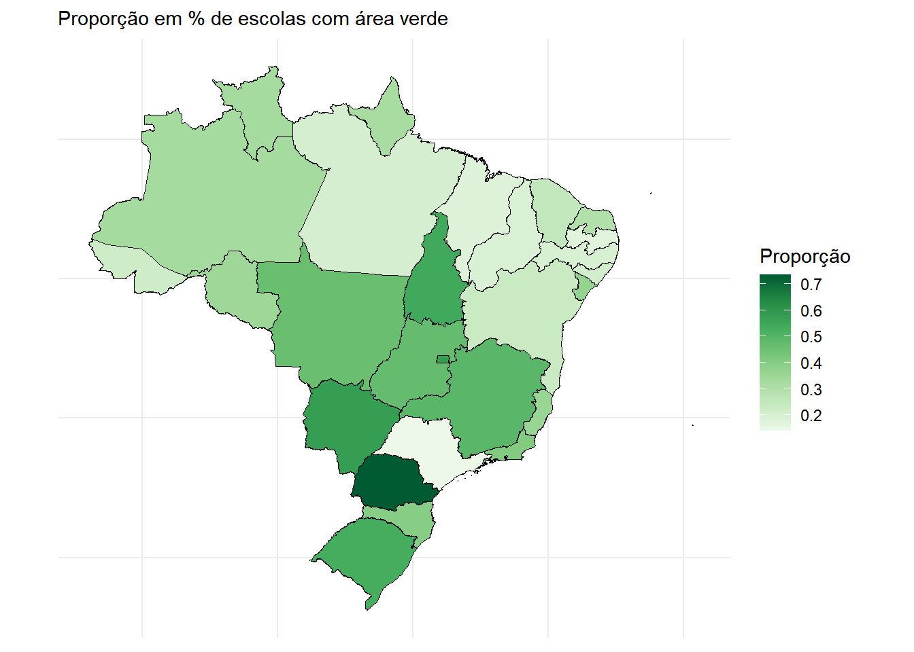
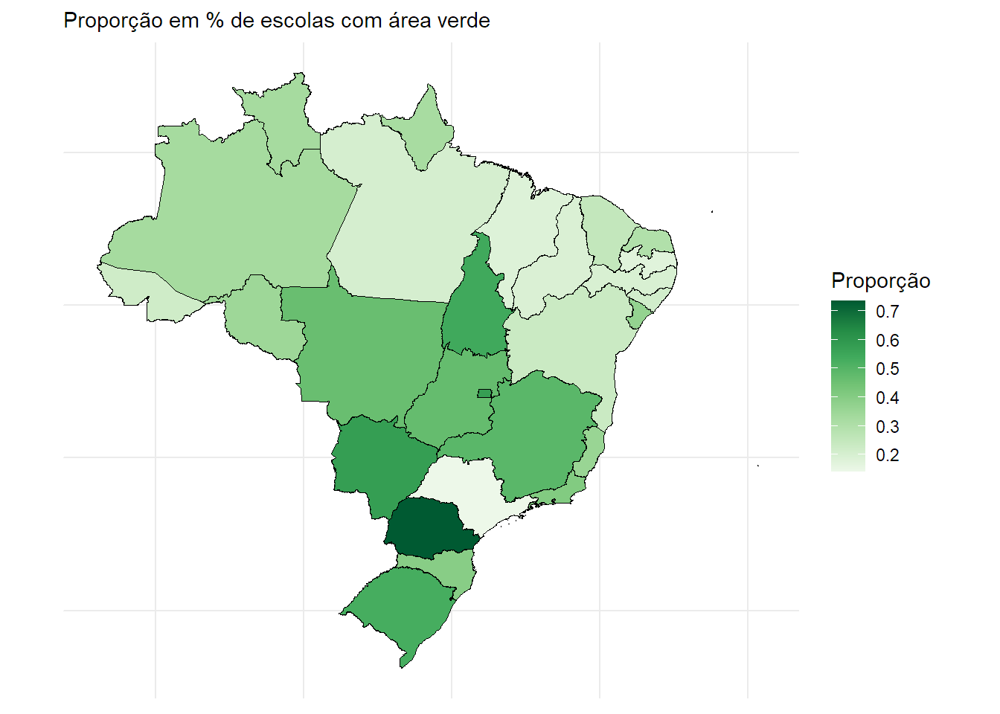
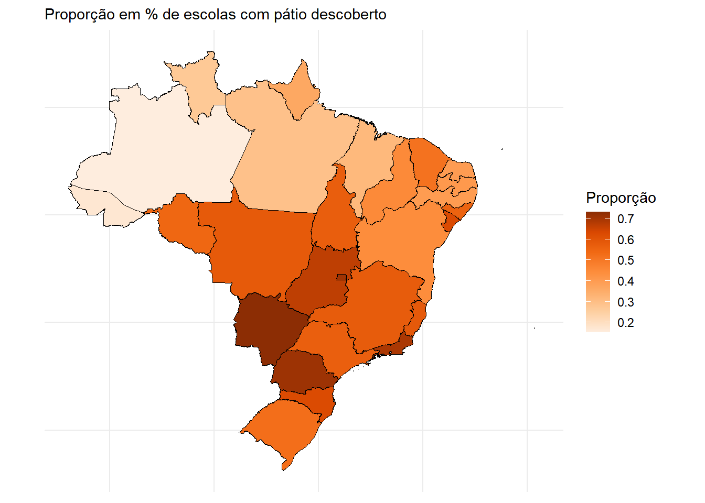

Este arquivo possui exemplos dos gráficos a serem gerados para o site Vacina.edu.
library(dplyr)
library(ggplot2)
library(geobr)
library(sf)
library(crul)
library(hrbrthemes)
no_axis <- theme(axis.title=element_blank(),
axis.text=element_blank(),
axis.ticks=element_blank())tabela_final <- readr::read_csv("../dados/outputs/tabela_final2021-08-18.csv")
lista_capitais <- c('1100205', '1302603', '1200401', '5002704', '1600303', '5300108', '1400100', '5103403', '1721000', '3550308', '2211001', '3304557', '1501402', '5208707', '2927408', '4205407', '2111300', '2704302', '4314902', '4106902', '3106200', '2304400', '2611606', '2507507', '2800308', '2408102', '3205309')
graf1 <- tabela_final %>%
group_by(uf) %>%
summarise(total_educ_basic = sum(total_educ_basic), prim_dose = sum(prim_dose), completa = sum(segun_dose+dose_unica)) %>%
mutate(imun_parcial = prim_dose/total_educ_basic, imun_completa = completa/total_educ_basic)
graf2 <- graf1 %>%
mutate(local = 'Estado')
capitais <- tabela_final %>%
filter(id_municipio %in% lista_capitais) %>%
rowwise() %>%
mutate(local = 'Capital', completa = segun_dose+dose_unica) %>%
select(uf, local, total_educ_basic, prim_dose, completa) %>%
mutate(imun_parcial = prim_dose/total_educ_basic, imun_completa = completa/total_educ_basic) %>%
rbind(graf2) graf1 %>%
select(uf, imun_parcial, imun_completa) %>%
mutate(ordem = ifelse(imun_parcial>1, 5+imun_completa, imun_parcial)) %>%
mutate(uf = forcats::fct_reorder(uf, ordem)) %>%
select(!ordem) %>%
tidyr::pivot_longer(!uf, names_to = 'vacinados', values_to = 'prop') %>%
mutate(prop = ifelse(prop>1,1,prop)) %>%
ggplot(aes(fill=vacinados, y=uf, x=prop)) +
geom_bar(stat="identity", position = "identity") +
scale_fill_manual(values=c("#083550", "#1F95E1"))
capitais %>%
select(uf, local, imun_parcial, imun_completa) %>%
filter(uf %in% c('RJ', 'SP', 'AL', 'MA', 'RS', 'GO')) %>%
tidyr::pivot_longer(!c(uf, local), names_to = 'vacinados', values_to = 'prop') %>%
mutate(prop = ifelse(prop>1,1,prop)) %>%
ggplot(aes(fill=vacinados, y=local, x=prop)) +
scale_fill_manual(values=c("#083550", "#1F95E1")) +
geom_bar(stat="identity", position = "identity") +
facet_wrap(~ uf, ncol = 1)
load('../apps/dados/states.RData')
load('../apps/dados/sumario3.rdata')
load('../apps/dados/sumario_capitais.RData')states %>%
filter(coluna == 'in_agua_potavel') %>%
mutate(prop_preenchida_sem_agua = zeros/(zeros+uns)) %>%
ggplot() +
geom_sf(aes(fill=prop_preenchida_sem_agua), color= '#000000', size=.15) +
labs(subtitle="Proporção em % de escolas sem acesso a água potável", size=8) +
scale_fill_distiller(direction = -1, name="Proporção") +
theme_minimal() +
no_axis
states %>%
filter(coluna == 'in_area_verde') %>%
mutate(prop_preenchida_sem_agua = zeros/(zeros+uns)) %>%
ggplot() +
geom_sf(aes(fill=prop_preenchida_sem_agua), color= '#000000', size=.15) +
labs(subtitle="Proporção em % de escolas sem área verde", size=8) +
scale_fill_distiller(direction = -1, palette = "Greens", name="Proporção") +
theme_minimal() +
no_axis
states %>%
filter(coluna == 'in_patio_descoberto' | coluna == 'in_patio_coberto') %>%
group_by(co_uf) %>%
summarise(soma_zeros = sum(zeros),
soma_uns = sum(uns)) %>%
mutate(prop_preenchida_sem_agua = soma_zeros/(soma_zeros+soma_uns)) %>%
ggplot() +
geom_sf(aes(fill=prop_preenchida_sem_agua), color= '#000000', size=.15) +
labs(subtitle="Proporção em % de escolas sem pátio descoberto", size=8) +
scale_fill_distiller(direction = -1, palette = "Oranges", name="Proporção") +
theme_minimal() +
no_axis
temp1 <- sumario3 %>%
filter(coluna == 'in_agua_potavel') %>%
mutate(prop_preenchida_sem_agua = zeros/(zeros+uns)) %>%
select(co_uf, prop_preenchida_sem_agua) %>%
rename(valor_estado = prop_preenchida_sem_agua)
temp2 <- sumario_capitais %>%
filter(coluna == 'in_agua_potavel') %>%
mutate(prop_preenchida_sem_agua = zeros/(zeros+uns)) %>%
select(co_uf, prop_preenchida_sem_agua) %>%
rename(valor_capital = prop_preenchida_sem_agua)
temp3 <- temp1 %>%
left_join(temp2) %>%
mutate(mymean = mean(c(valor_estado,valor_capital) ), dif = valor_estado-valor_capital) %>%
arrange(valor_estado) %>%
mutate(co_uf=factor(co_uf, co_uf))
ggplot(temp3) +
geom_segment( aes(x=co_uf, xend=co_uf, y=valor_estado, yend=valor_capital), color="grey") +
geom_point( aes(x=co_uf, y=valor_estado), color=rgb(0.2,0.7,0.1,0.5), size=3 ) +
geom_point( aes(x=co_uf, y=valor_capital), color=rgb(0.7,0.2,0.1,0.5), size=3 ) +
coord_flip()+
theme_ipsum() +
theme(
legend.position = "none",
) +
xlab("") +
ylab("Value of Y")